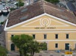
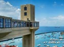
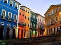
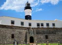

PONTOS TURÍSTICOS

Mercado Modelo
$$ - R$ 50,00
O Mercado Modelo é um mercado de artesanato localizado na cidade de Salvador, estado da Bahia, no Brasil. Foi inaugurado em 2 de fevereiro de 1912, e ocupa, desde 1971. Saiba Mais.

Elevador Lacerda
$ - R$ 5,00
O Elevador Lacerda é um sistema de transporte público.Trata-se do primeiro elevador urbano do mundo. Faz o transporte de pessoas entre a Praça Cairu, na Cidade Baixa, e a Praça Tomé de Sousa, na Cidade Alta. Saiba Mais.

Pelourinho
ENTRADA FRANCA
O Pelourinho é um bairro da cidade de Salvador, no Brasil. Localiza-se no Centro Histórico da cidade, na área que abrange apenas as ruas que vão do Terreiro de Jesus até o Largo do Pelourinho. Saiba Mais.

Farol da Barra
ENTRADA FRANCA
O Farol da Barra, ou Farol de Santo Antônio, foi o segundo existente em todo o continente americano, antecedido somente pelo farol do antigo Palácio de Friburgo, no Recife. Saiba Mais.